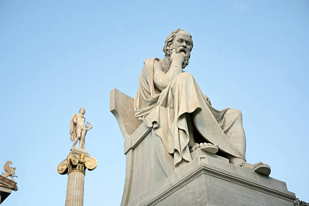

Sócrates, Platón y Aristóteles: Los Pilares de la Filosofía Occidental
Sócrates, Platón y Aristóteles fueron los filósofos más influyentes de la Antigua Grecia y sentaron las bases del pensamiento occidental.
Sócrates (470-399 a.C.) fue el maestro que revolucionó la filosofía con su método mayéutico, basado en el diálogo y la reflexión.
galeria de Imagenes

Creía que la verdadera sabiduría consistía en reconocer la propia ignorancia. Fue condenado a muerte por cuestionar las creencias de su época, pero su legado fue preservado por sus discípulos.
Platón (427-347 a.C.), su alumno más destacado, desarrolló la Teoría de las Ideas, donde afirmaba que el mundo sensible es solo una copia imperfecta del mundo ideal. En La República, propuso un gobierno liderado por filósofos. Fundó la Academia de Atenas, la primera gran escuela de filosofía.
Aristóteles (384-322 a.C.), discípulo de Platón y maestro de Alejandro Magno, rechazó la teoría de su maestro y defendió un enfoque más empírico. Sus estudios abarcaron lógica, ética, política y biología, influenciando profundamente la ciencia y el pensamiento racional.
Juntos, estos tres pensadores construyeron la base de la filosofía, la ética y la política, influyendo en siglos de conocimiento.